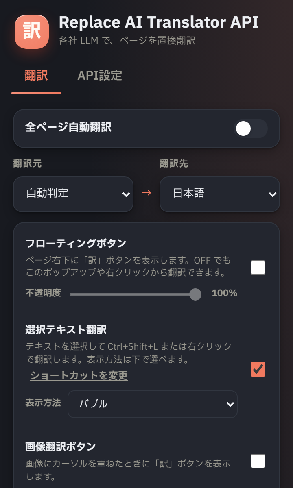

文脈で訳す
LLM を使うことで、直訳ではなく前後関係をふまえた訳文になります。
LLM in-place translationChrome / Firefox
お手持ちの API キーでクラウド LLM を呼び、表示中のページを原文から訳文へ差し替え。ワンクリックで原文へ戻せます。文脈をふまえた自然な訳が得られます。

TRANSLATION MODEL
Replace AI Translator API の仕様
大規模言語モデルを使うため、文単位の直訳ではなく文脈をふまえた自然な訳文になります。
使いたい LLM プロバイダを選び、自分の API キーを登録します。まずは MyMemory でキーなしでも試せます。
ポップアップまたはフローティングボタンから実行すると、その場で訳文に差し替わります。
トグルでいつでも原文へ復元。訳が怪しいところだけ原文で確認できます。
FEATURES
ポップアップ内のクイック翻訳では、ちょっとした文章をその場で訳せます。画像内テキストの翻訳（実験的）にも対応しています。
対象と処理の一覧
| 対象 | 処理 | 状態 |
|---|---|---|
| 本文テキスト | 訳文へ置換 | REPLACE |
| 翻訳先言語の箇所 | そのまま | KEEP |
| 遅延読み込み部分 | 自動で追従翻訳 | AUTO |
| 原文 | トグルで復元 | RESTORE |
BRING YOUR OWN KEY
provider: openai | anthropic | gemini | xai
your key
API キーは端末内に保存し、翻訳先プロバイダ以外へは送らない
DESIGN PRINCIPLES
LLM を使うことで、直訳ではなく前後関係をふまえた訳文になります。
訳文で読み、迷ったら原文に戻す。行き来を前提に設計しています。
翻訳先はあなたが選んだプロバイダ。中継サーバーを挟みません。
INSTALL
各社 LLM の API キーを用意すると全機能を使えます。キーなしでも MyMemory ですぐ試せます。MIT License。